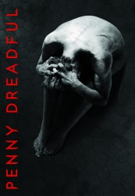

")
 
 IMDB-Wertung: 8.2 / 10
IMDB-Wertung: 8.2 / 10  Metascore:
Metascore: 
London 1891: Die geheimnisvolle Vanessa Ives heuert den Scharfschützen Ethan Chandler aus einer fahrenden Wildwest-Show an. Der Amerikaner soll ihr und dem wohlhabenden Afrika-Forscher Sir Malcom Murray bei der Suche nach dessen entführter Tochter Mina Harker, einer Jugendfreundin Vanessas, helfen. Während ihrer Nachforschungen treffen die Drei auf zahlreiche Furcht einflößende Gestalten, darunter Dracula, Dr. Frankenstein, dessen Kreaturen, Dorian Gray und Professor Van Helsing und geraten mehr und mehr in deren Bann.
Jahr: 2014
Dauer: 53 Minuten
FSK: 16
Land: USA Studio: Showtime NetworksTonspuren: DD5.1 - ,
Untertitel:
Auflösung: 720p (1280x720) Größe: 128000 MB
Genre: Horror, Drama, Fantasy, TV-Serie
Regisseur: Damon Thomas, James Hawes, Brian Kirk, Paco Cabezas, J.A. Bayona, Coky Giedroyc, Dearbhla Walsh, Kari Skogland, Toa Fraser
Drehbuch: Salim Khan
Soundtrack:
Darsteller:
 Timothy Dalton als Sir Malcolm Murray
Timothy Dalton als Sir Malcolm Murray Eva Green als Vanessa Ives
Eva Green als Vanessa Ives Rory Kinnear als John Clare
Rory Kinnear als John Clare Josh Hartnett als Ethan Chandler
Josh Hartnett als Ethan Chandler Danny Sapani als Sembene
Danny Sapani als Sembene Simon Russell Beale als Ferdinand Lyle
Simon Russell Beale als Ferdinand Lyle Douglas Hodge als Bartholomew Rusk
Douglas Hodge als Bartholomew Rusk Sarah Greene als Hecate Poole
Sarah Greene als Hecate Poole Helen McCrory als Madame Kali
Helen McCrory als Madame Kali Patti LuPone als Dr. Seward
Patti LuPone als Dr. Seward Wes Studi als Kaetenay
Wes Studi als Kaetenay Nicole O'Neill als Witch #1
Nicole O'Neill als Witch #1 Shazad Latif als Dr. Henry Jekyll
Shazad Latif als Dr. Henry Jekyll Christian Camargo als Dr. Alexander Sweet
Christian Camargo als Dr. Alexander Sweet Stephen Lord als Warren Roper
Stephen Lord als Warren Roper David Haig als Oscar Putney
David Haig als Oscar Putney Perdita Weeks als Catriona Hartdegen
Perdita Weeks als Catriona Hartdegen Sean Gilder als Marshall Franklin Ostow
Sean Gilder als Marshall Franklin Ostow Alun Armstrong als Vincent Brand
Alun Armstrong als Vincent Brand David Warner als Professor Abraham Van Helsing
David Warner als Professor Abraham Van Helsing Ronan Vibert als Sir Geoffrey Hawkes
Ronan Vibert als Sir Geoffrey Hawkes Brian Cox als Jared Talbot
Brian Cox als Jared Talbot Anna Chancellor als Claire Ives
Anna Chancellor als Claire IvesDatei: X:\HD-Serien\Penny Dreadful\S01\Penny Dreadful S01E01.mkv seit 17.01.2017
Festplatte: HD Serien(I-ST)
 Es gibt insgesamt 182 Filme in der Gruppe 'HD-Serien'
Es gibt insgesamt 182 Filme in der Gruppe 'HD-Serien'